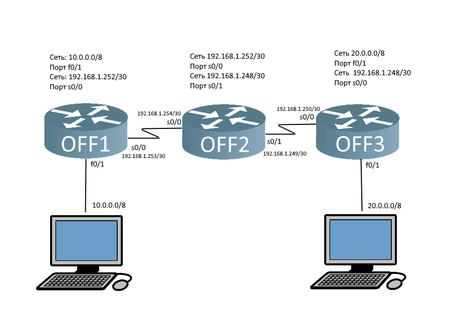
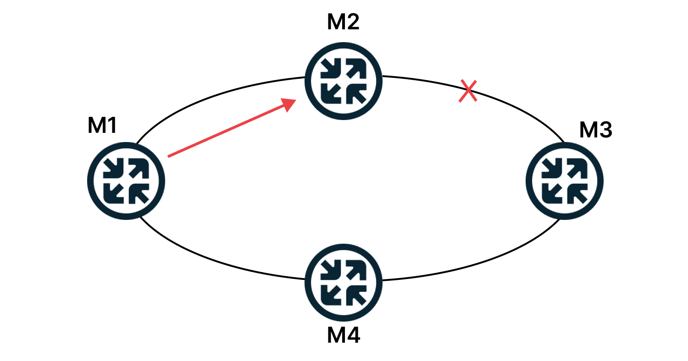
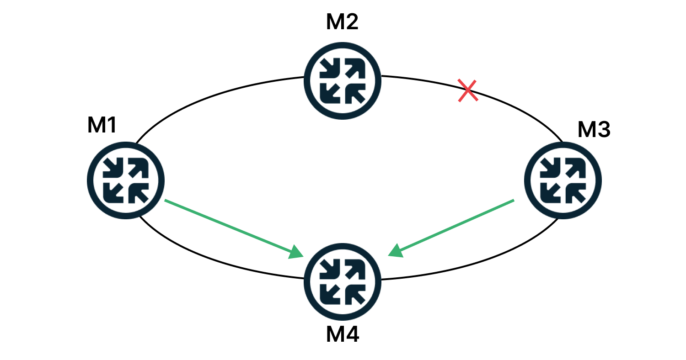
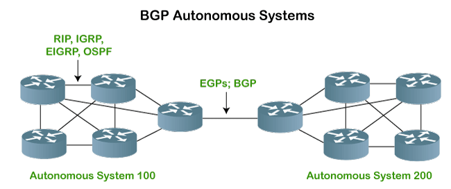

1. RIP (Routing Information Protocol) - это протокол дистанционного вектора, который используется в малых сетях.
Он определяет маршрут по числу прыжков (hop count), которое является числом маршрутизаторов, через которые проходит пакет.
RIP имеет ограниченную масштабируемость и может привести к петлям.
В протоколе RIP маршрутизаторы узнают о сетях назначения от соседних маршрутизаторов через процесс совместного использования.
Маршрутизаторы, работающие по протоколу RIP, периодически транслируют настроенные сети со всех портов.
Список маршрутизаторов обновит их таблицу маршрутизации на основе этой информации.

Когда мы запускаем эту сеть, маршрутизаторы знают только о непосредственно подключенной сети.
2. OSPF (Open Shortest Path First) - это протокол маршрутизации состояний связи, который используется в крупных сетях. Он определяет наилучший маршрут на основе пропускной способности, задержки и надежности соединений. OSPF масштабируем и устойчив к петлям.
Что такое статическая маршрутизация. Представим небольшую компанию с внутренней базой знаний, которая хранится на сервере в соседнем помещении. Когда сотрудник хочет открыть документ из базы, пакет с запросом передается на маршрутизатор. Последний обращается к таблице маршрутизации и понимает, в какую сеть отправить пакет. Для этого администратор вручную прописывает все маршруты к сетям в таблице маршрутизации. Но когда в компании десяток департаментов и сотни маршрутизаторов, такой сценарий нереализуем (особенно при добавлении новых маршрутизаторов). Здесь на помощь приходит динамическая маршрутизация с помощью протокола OSPF. Протокол OSPF заполняет таблицы маршрутизации автоматически, при этом маршрутизаторы постоянно обмениваются данными о состоянии сети и актуализируют таблицу. Администратору не нужно бегать и самостоятельно переписывать таблицы. Аналогично в случае сбоев: со статической маршрутизацией тяжело отслеживать доступность сетей. Если канал между маршрутизаторами прерван, то пакеты, которые M2 получил от M1 (см. схему ниже), никуда не отправятся.

Если сети работают на протоколе OSPF, маршруты перестроятся автоматически.

OSPF — протокол внутренней маршрутизации. «Внутренней» означает, что маршрутизаторы связаны в замкнутой системе или в одном домене. Понимание принципов работы протокола и алгоритмов облегчат настройку OSPF, поэтому о них подробнее.
3. BGP (Border Gateway Protocol) - это протокол маршрутизации между доменами, который используется в Интернете. Он определяет наилучший маршрут на основе маршрутизации по наиболее короткому пути и другим факторам, таким как пропускная способность и стоимость маршрута.
Основной задачей BGP является определение наилучшего маршрута для доставки пакетов данных между двумя сетями. Для этого BGP использует множество критериев, таких как длина маршрута, пропускная способность, стоимость и наличие альтернативных маршрутов. BGP также использует "атрибуты" для описания свойств маршрута и помогает обнаруживать и удерживать стабильные маршруты.
BGP работает на уровне транспорта и использует надежный протокол TCP для установления соединения между двумя маршрутизаторами. При установлении соединения между двумя автономными системами происходит обмен информацией о маршрутах, затем BGP устанавливает согласованный маршрут между сетями и обменивается данными со статическими механизмами маршрутизации, чтобы найти оптимальное решение для пересылки данных.
BGP имеет ключевое значение для связи между несколькими АС в Интернете и является основой для бизнес-моделей ISP и телекоммуникационных компаний. В то же время, BGP также имеет определенные проблемы и уязвимости, такие как возможные атаки на маршрутизационные таблицы и недостаточная безопасность в плане аутентификации и авторизации.

4. EIGRP (Enhanced Interior Gateway Routing Protocol) - это протокол маршрутизации состояний связи, который используется на сетях Cisco. Он определяет наилучший маршрут на основе пропускной способности, задержки, доставки и надежности соединений.
5. IS-IS (Intermediate System to Intermediate System) - это протокол маршрутизации состояний связи,
который используется в крупных сетях. Он определяет наилучший маршрут на основе пропускной способности, задержки, доставки и надежности соединений.
Эти протоколы маршрутизации используются в разных ситуациях, и выбор протокола зависит от потребностей конкретной сети.